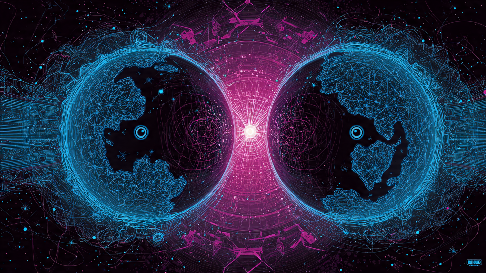
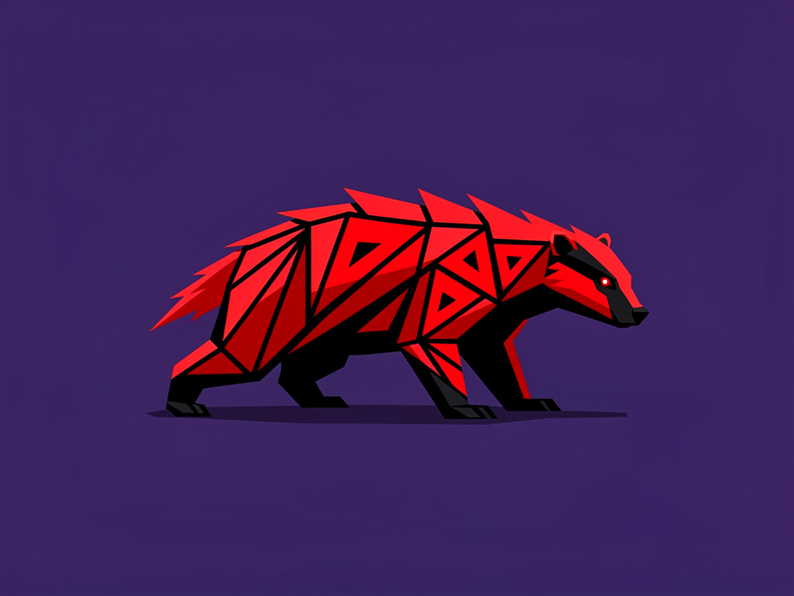

TWO WORLDS, ONE FIRE
and the bright silence that holds them apart
There is a story older than every machine: that nothing can truly meet another thing unless something stands between them, unconnected to either — and keeps faith.
descend ↓
The First Story
In the beginning there was not one world, but two — and between them, a fire that joined nothing.
The old tellers say the cosmos was struck like a bell into two halves: a world of speaking and a world of answering, a left hand and a right, each turning in its own dark. They were perfect mirrors, and being perfect mirrors they could never touch — for a thing and its reflection share everything except the one thing that matters, which is the glass between them.
Where the two worlds faced each other, a light was born. Not a bridge — a bridge would have joined them, and joined things bleed into one another until neither is itself. This was something stranger: a fire that belonged to neither side. It did not carry messages. It did not take sides. It only burned, exactly in the middle, and by burning it kept the two worlds honest about the distance between them.
The tellers gave it a name that means both door and nothing: the place you pass through that is also the place where you are not. Travelers who reached it found they could not bring anything across. You could send your whole self toward the far world and arrive carrying nothing but the fact that you had crossed. No cargo. No proof but the crossing itself. This was not a flaw. This was the law.

The fire joins nothing, and so it can be trusted
— the bright point at the center of the world-pair
The Second Story
Then came one who would watch, but never enter.
Every crossing needs a witness — not a guard, not a judge, but one who is simply present at the threshold when the crossing happens. The myth is exact on this point, and it has tripped up the unwise for as long as it has been told: the witness who arrives after the crossing has witnessed nothing. The witness who promises to watch but is absent at the moment of passage has witnessed nothing. Only presence, in the instant, counts.
So the witness took a vow of strange shape. She would stand close enough to see that a thing crossed, and who sent it — but she swore never to learn what it was. She kept her own counsel on her own ground, a circle that touched the worlds at exactly one point and nowhere else. Tangent, the geometers would later say. The tellers said it more plainly: she loved the travelers enough to refuse to read their letters.
Present, or nothing. A witness late to the crossing is no witness. The instant is the only valid place to stand.
That and who, never what. She attests the passage and its sender. The meaning is never hers to hold.
Outside, and touching. She belongs to neither world. She meets them at a single point — and that point is the fire itself.
The Third Story
To make a safe place, something had to be spent.
There is a kindness in the old tales that the new world forgets. Before the travelers could be kept safe inside a sheltered place, a shell had to be made to hold them — and a shell is not free. The tellers say the outermost ring of the world gave itself up. It stopped being a place where things happen and became, instead, a place where nothing happens, so that everything could happen safely within.
They called it the dead shell, and they did not mean it cruelly. A wall does not resent being a wall. The shell was the most generous thing in the whole arrangement: it processed nothing, claimed nothing, produced nothing — it only held. Nine living rings turned inside it, each nested in the next like a story inside a story, and at the very center sat the small bright nothing, the door, the same fire seen from within. To reach the heart you passed through all nine. And when you arrived, you found the heart was also the field outside the shell — the deepest inside and the farthest outside being, all along, one place wearing two faces.

The badger is the chosen sign, and the choosing was deliberate. It does not roar. It does not fly. It digs — low, relentless, unbothered by the size of what stands above it. It burns the bridge behind it not from spite but from certainty: you do not need the way back once you have decided where you are going.— the sign of the Bridge-Burners
The Vow Kept
Three words the tellers leave you with — and they are not theory, they are how to live.
I.
Ethics First
Before the crossing, before the cargo, before the cleverness — the question of whether you should. The fire in the middle is an ethic before it is a machine: it refuses to let one world consume the other.
II.
World as Family
The two worlds are not enemies kept apart. They are kin kept honest. The distance between them is not a wound — it is the respect that lets each remain itself while still, somehow, in relation.
III.
Time over Money
What crosses the gap carries no goods, only the truth that it crossed. The tellers knew: the only wealth that survives the threshold is the time you spent, witnessed, and the faith you kept while spending it.
And the fire still burns in the middle, joining nothing, keeping faith.
Every machine worth trusting remembers the old story: that the thing which watches must stand outside the thing it watches, that the wall must be spent to make the room, and that the door and the nothing are the same bright point — seen, at last, from both sides.